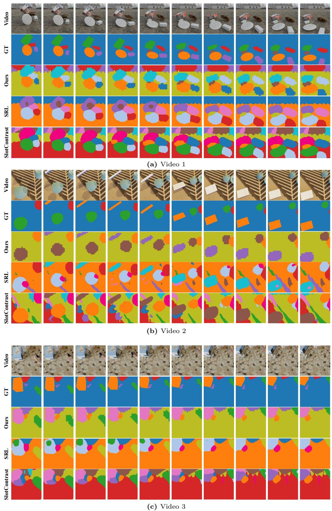

Figureure 3 · : Qualitative comparison on MOVi-CFig. 3: Qualitative comparison on MOVi-C. From top to bottom, we visualize the input, GT masks, predictions from SlotContrast, SRL, and SSync, followed by the non-boundary and boundary regions selected by SSync for interior and boundary supervision, respectively.这张图/表用于判断 Selective Synergistic Learning for Video 的实验收益来自哪里。重点看替换、消融或跨模型设置下趋势是否一致，而不是只看单个最高分。

Figureure 6 · : Qualitative results on the MOVi-C dataset.Fig. 6: Qualitative results on the MOVi-C dataset.这张图/表用于判断 Selective Synergistic Learning for Video 的实验收益来自哪里。重点看替换、消融或跨模型设置下趋势是否一致，而不是只看单个最高分。